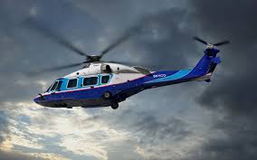
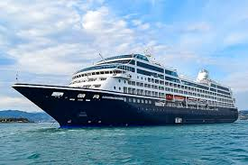
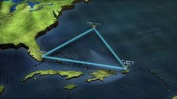

Layanan Pengantaran

Helikopter
Rp.10.000.000
Pesawat
Rp.7.000.000

Kapal Selam
Rp.5.000.000

Kapal Pesiar
Rp.7.000.000
Traveling ke Wilayah Misterius
Selamat datang di Gerbang Segitiga Bermuda.
Gerbang Segitiga Bermuda adalah pelopor layanan ekspedisi dan perjalanan ekstrem pertama di dunia yang secara khusus menangani rute menuju wilayah Segitiga Bermuda — kawasan laut yang selama berabad-abad menyimpan misteri hilangnya kapal dan pesawat. Kami hadir bukan hanya sebagai penyedia jasa pengiriman, tetapi sebagai jembatan antara rasa penasaran manusia dan wilayah yang dikenal sebagai salah satu tempat paling enigmatis di planet ini.Didukung oleh tim profesional yang telah terlatih dalam penjelajahan laut dalam, navigasi udara ekstrem, serta prosedur keselamatan internasional, kami memastikan setiap perjalanan yang dilakukan melalui layanan kami berada dalam pengawasan ketat dan perlindungan terbaik. Kami bekerja sama dengan lembaga riset dan eksplorasi global untuk menjamin bahwa pengiriman maupun perjalanan klien kami berada di tangan yang tepat.Kami percaya bahwa setiap tempat memiliki cerita, dan Segitiga Bermuda adalah salah satu kisah terbesar yang belum selesai. Lewat layanan kami, Anda tidak hanya mengirim paket — Anda mengirimkan keberanian, semangat penjelajahan, dan keingintahuan yang tiada batas. Bergabunglah bersama kami untuk membuka gerbang menuju legenda yang selama ini hanya bisa Anda baca dalam buku sejarah dan teori konspirasi.Kami adalah penyedia jasa ekspedisi ekstrem pertama di dunia yang fokus pada pengiriman ke wilayah Segitiga Bermuda.
Rp.10.000.000
Rp.7.000.000
Rp.5.000.000
Rp.7.000.000
📍 Markas Terapung di Tengah Badai Atlantik
📧 Email: info@postalsegitigabermuda.com
📞 Teleportasi Darurat: +999-BERMUDA